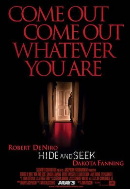

Hide and Seek



Run Time: 101 minutes
Staring: Robert De Niro, Dakota Fanning, Elisabeth Shue, Famke Janssen.
Director: John Polson.
The Sixth Sense was a superb exercise in slow-burn horror and subtle atmosphere, a masterfully told tale that deservedly rolled on to rake in the cash at the box office. But it’s also got a lot to answer for. Mainly, the rank smell of PG-13 horror – in the US it’s the last stop before R18+ rating that seriously limits the audience that can go and see a movie. We also have The Sixth Sense to thank for what is known as the ‘big-reveal’, the massive narrative twist in the conclusion film that exposes all is not as it seemed. Enough already guys. We’ve seen it all before and it’s time to move on. Aussie Tropfest legend John Polson is quickly building an against-the-odds career as a big-ticket Hollywood director, but regrettably with Hide and Seek he’s leaped onto the rickety Sixth Sense wagon.
Hide and Seek revolves around widowed psychologist David (Robert De Niro)) who retreats with his daughter Emily (Dakota Fanning) to upstate New York following the suicide of his wife. Traumatised by witnessing her mother’s death, Emily withdraws and starts up a new relationship with her imaginary friend ‘Charlie’. Her behaviour is initially dismissed as just her way of dealing with the grief of her mother’s loss, but when Emily begins scaring off the neighbourhood children with her intense stares, mutilating her dollies and murdering small animals, David begins to get a little worried. Emily seems intent on tormenting her poor father as well as any other poor sap who crosses her path, but is ‘Charlie’ really only a figment of her imagination? Or is this imaginary friend instead something more sinister?
‘Evil child’ horror films have been freaking out the cinema-going public since The Omen was released in the 70’s, and the ‘imaginary friend’ concept is certainly an intriguing one. Unfortunately though, Hide and Seek is formulaic from the second the opening credits roll. This doesn’t make it a totally dud film, there’s just very few surprises to distract the viewer from the mediocrity that characterises every frame. Steeped heavily in clichés and just utterly predictable, the plot quickly deteriorates into a turgid who-dunnit. Is it the shallow-eyed daughter? The emotionally bruised and guilt-ridden father? The creepy-looking neighbours who are always loitering about? Who knows, maybe it’s the hack scriptwriters who insist on serving up the same old lukewarm clichés time and time again.
While the content isn’t exactly groundbreaking, some may find the acting talent worth tuning in for. Dakota Fanning is one creepy little brat in this film, but as clearly demonstrated in the recent mega-smash War of the Worlds, Fanning is an incredibly accomplished actress for someone so very young. She radiates genuine emotion and pain, and her behaviour becomes increasingly unsettling and frightening as the movie etches on. Her performance is almost enough to lift the film above stock standard, but her acting talents are not enough to gloss over the script’s mediocrities. Similarly, De Niro is always easy to watch, but as has been the norm lately, he’s not capitalising on the strength of his earlier work with Hide and Seek.
Polson does his best to elevate the material with his surprisingly deft hand behind the camera (demonstrated also in his similarly clichéd debut project Swim Fan), putting some really creepy and claustrophobic visuals up on the screen. He manages to sketch a deeply unsettling portrait of rural New York and instils a chilling sense of foreboding to shadow the sinister events that proceed, delivering some fairly effective shocks and scares along the way. He’s the man to watch, but as promising as his talents may be it would be great to see him directing some more intriguing material next time.
With an A-grade cast like De Niro and Fanning combined with an emerging talent like Polson, you’d think that Hide and Seek would have been worth entering a darkened closet for. But don’t go making a play for the boogie man just yet, because the fine cast, excellent production values and compelling concept fail to transcend a second-rate script that wallows in boring predictability. Horror is so hot right now, with a huge number of modestly budgeted films raking it in at the box office, but the genre is always better served in the hands of independent auteurs rather than the big studios. Not a bad choice as far as a rental is concerned, but you could certainly do better in terms of PG-13 horror. Like, maybe, The Sixth Sense.
Rating: 2.5 out of 5